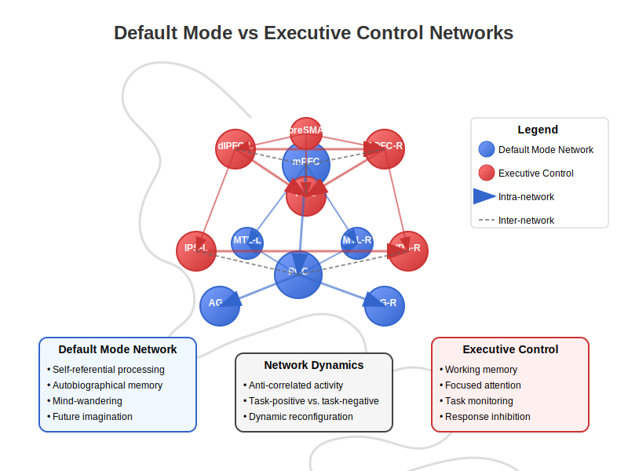
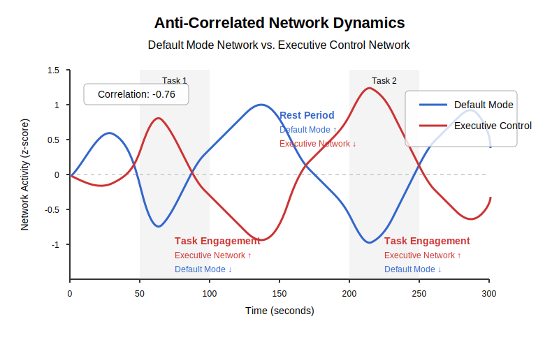

Chapter 5: Default-Mode vs Executive Control Networks#
5.0 Chapter Goals#
Understand large-scale brain networks and their functional significance
Contrast default-mode and executive control networks
Connect network dynamics to cognitive functions
Explore computational models of brain network interactions
Apply network analysis approaches to neural data
Draw parallels between brain network dynamics and artificial intelligence
5.1 Network Neuroscience Fundamentals#
From Local Circuits to Distributed Networks#
The brain is not a collection of isolated regions but a highly integrated system of networks spanning different spatial scales. While individual neurons form local circuits through synaptic connections, these circuits in turn connect to form large-scale networks that coordinate activity across brain regions.
Network neuroscience has emerged as a framework to understand how these interconnected systems give rise to cognitive functions and behavior. Rather than focusing on the activity of individual regions, network approaches emphasize the patterns of communication between regions and how these interactions enable complex information processing.
Methods for Studying Brain Networks#
Several complementary techniques allow us to observe brain networks in action:
Functional MRI (fMRI) measures blood-oxygen-level-dependent (BOLD) signals across the brain, providing an indirect measure of neural activity. While its temporal resolution is limited (typically 1-2 seconds), its spatial resolution allows researchers to map functional connections across the entire brain.
Electroencephalography (EEG) and Magnetoencephalography (MEG) detect electrical signals and magnetic fields generated by neuronal activity, respectively. They offer millisecond-level temporal precision but more limited spatial resolution compared to fMRI.
Diffusion MRI measures the diffusion of water molecules to map structural connections (white matter tracts) between brain regions, providing the physical substrate for network communication.
Functional vs Structural Connectivity#
Brain networks can be characterized in two fundamental ways:
Structural connectivity refers to the physical connections (axonal pathways) linking different brain regions. These anatomical connections, especially long-range white matter tracts, form the physical infrastructure for information transfer.
Functional connectivity refers to the statistical dependencies between the activity patterns of different brain regions. Two regions with highly correlated activity are considered functionally connected, regardless of whether they share direct structural connections.
While structural connections constrain possible functional interactions, functional connectivity is dynamic and context-dependent, changing with cognitive demands and states of consciousness.
Network Metrics and Their Interpretation#
Graph theory provides mathematical tools to analyze brain networks, where brain regions are represented as nodes and their connections as edges:
Degree: The number of connections a region has, indicating its connectivity importance
Clustering coefficient: The extent to which a region’s neighbors are connected to each other, reflecting local integration
Path length: The minimum number of steps needed to travel between two regions, indicating network efficiency
Modularity: The degree to which a network can be divided into distinct communities or modules
Centrality measures: Metrics that identify hub regions crucial for network communication
These metrics help characterize network organization and reveal principles of brain function, such as small-world architecture (high clustering with short path lengths) and rich-club organization (highly connected hubs that preferentially connect to each other).
5.2 The Default Mode Network (DMN)#
Discovery and Components#
The default mode network (DMN) was discovered serendipitously in the late 1990s. Researchers noticed that certain brain regions consistently showed decreased activity during demanding tasks compared to rest, suggesting a “default mode” of brain function that is active when we are not engaged in explicit tasks.
The core regions of the DMN include:
Medial prefrontal cortex (mPFC): Involved in self-referential processing and social cognition
Posterior cingulate cortex (PCC)/precuneus: Associated with autobiographical memory and self-awareness
Angular gyri: Integrative hubs involved in semantic processing and memory
Hippocampal formation: Critical for memory encoding and retrieval
Lateral temporal cortex: Involved in conceptual processing and semantic memory

The DMN is often referred to as a “task-negative” network because its activity typically decreases during externally-directed tasks, though this terminology has been debated as our understanding of its functions has evolved.
Self-Referential Processing#
One key function of the DMN is self-referential thinking - reflecting on our own thoughts, feelings, and experiences. The medial prefrontal cortex is particularly active when we think about ourselves, our traits, or our emotional states.
This introspective capacity may underlie metacognition, the ability to monitor and evaluate our own cognitive processes. Self-referential processing also supports social cognition, as we often understand others by referencing our own experiences and mental states.
Mind-Wandering and Creativity#
The DMN is highly active during mind-wandering, when our thoughts drift away from the immediate environment to internally generated content. This “stimulus-independent thought” occurs frequently in daily life - studies suggest people spend 30-50% of their waking hours mind-wandering.
Rather than being purely wasteful, mind-wandering serves important functions:
Autobiographical planning
Creative problem-solving
Maintaining a sense of personal identity
Simulating social interactions
DMN activity has been linked to creative cognition, particularly during the “incubation” phase when we step away from a problem. The network may facilitate the formation of novel associations between previously unconnected ideas, supporting moments of insight.
Relation to Memory and Imagination#
The DMN plays a crucial role in both remembering the past and imagining the future. This “mental time travel” relies on the construction of scenes and episodes from stored knowledge, engaging similar neural machinery for both retrospection and prospection.
The hippocampus, which connects with core DMN regions, contributes to this process by retrieving and recombining memory elements into coherent representations. This explains why patients with hippocampal damage show deficits not only in recalling past events but also in imagining novel future scenarios.
The DMN’s role in imagination extends beyond temporal simulations to counterfactual thinking (considering “what might have been”) and creating fictional scenarios, highlighting its broader involvement in generative mental processes.
5.3 Executive Control Networks#
Frontoparietal Control Network#
The frontoparietal control network (FPCN) is a set of regions primarily including:
Dorsolateral prefrontal cortex (dlPFC): Critical for working memory and cognitive control
Anterior cingulate cortex (ACC): Involved in performance monitoring and conflict detection
Posterior parietal cortex: Supporting attentional selection and goal-directed behavior
Anterior insula: Contributing to salience detection and network switching
This network activates during tasks requiring cognitive control, such as response inhibition, task switching, and working memory maintenance. It is sometimes called a “task-positive” network because its activity typically increases during externally-directed, goal-oriented tasks.
The FPCN is particularly engaged when tasks involve:
Maintaining and manipulating information in working memory
Implementing rule-based behaviors
Inhibiting prepotent responses
Flexibly shifting between task demands
Salience Network#
The salience network, anchored by the anterior insula and dorsal anterior cingulate cortex, plays a crucial role in detecting behaviorally relevant stimuli and coordinating network dynamics.
This network acts as a switch between the DMN and the frontoparietal control network, engaging appropriate resources based on current demands. When salient events are detected, the salience network helps transition from introspective processing to goal-directed executive control.
The anterior insula, in particular, is involved in interoception - awareness of internal bodily states - suggesting that physiological signals influence network dynamics and cognitive processing.
Cognitive Control Functions#
Executive control networks support a range of cognitive control functions:
Inhibitory control allows us to suppress inappropriate responses and resist interference from distractors, critical for maintaining goal-directed behavior in the face of competing stimuli.
Conflict monitoring, primarily associated with the anterior cingulate cortex, detects when our automatic responses conflict with task goals, signaling the need for increased control.
Task-set maintenance keeps relevant rules and goals active to guide behavior, while task-switching enables flexible shifts between different cognitive operations based on changing demands.
These functions collectively enable adaptive behavior in complex environments, where goals must be maintained despite distractions, and strategies must be adjusted in response to changing circumstances.
Working Memory and Attention#
Working memory—the ability to temporarily maintain and manipulate information—is a core function supported by executive networks, particularly the dorsolateral prefrontal cortex.
Models of working memory have evolved from static “storage buffers” to dynamic processes involving the selective maintenance of relevant information through sustained attention. The frontoparietal network implements this process by:
Selecting relevant information for processing
Maintaining representations through persistent neural activity
Protecting these representations from interference
Manipulating information according to task demands
Attention, closely linked to working memory, involves selecting certain stimuli for enhanced processing while filtering out irrelevant information. Executive networks implement both top-down attentional control (based on goals and expectations) and bottom-up capture (based on stimulus salience).
5.4 Network Interactions#
Anti-Correlation and Competitive Dynamics#
One of the most striking findings in network neuroscience is the anti-correlated relationship between the default mode network and executive control networks. When one network increases in activity, the other typically decreases.

This pattern, first observed in resting-state fMRI studies, suggests a competitive relationship between internal, self-generated cognition and external, task-focused attention. The anti-correlation is strongest during demanding cognitive tasks but persists even during rest.
The degree of segregation between these networks has functional significance—reduced anti-correlation has been observed in conditions including aging, ADHD, and schizophrenia, suggesting that appropriate network segregation supports optimal cognitive functioning.
Task-Positive vs Task-Negative Networks#
The terms “task-positive” and “task-negative” emerged from early observations that executive networks increase activity during tasks while the DMN decreases. However, this dichotomy has been challenged by more nuanced findings:
The DMN activates during certain types of tasks, particularly those involving social cognition, autobiographical memory, or semantic processing
Different portions of the DMN show distinct activation patterns during different cognitive states
The relationship between networks depends on task demands and individual differences
Rather than strict opposition, these networks may represent complementary modes of cognition that are differentially engaged based on current demands and priorities.
Dynamic Network Reconfiguration#
Brain networks are not static but undergo continuous reconfiguration in response to changing cognitive demands. This dynamic reorganization occurs across multiple timescales:
Rapid (millisecond to second) reconfiguration in response to immediate demands
Medium-term (minutes to hours) adjustments reflecting learning or fatigue
Long-term (days to years) changes corresponding to development or skill acquisition
Network reconfiguration involves changes in both the strength of connections and the patterns of interaction between networks. Periods of transition between cognitive states show unique network configurations, suggesting that the brain passes through specific “network states” as it shifts between different cognitive operations.
Modern approaches to studying these dynamics include sliding-window analyses, dynamic functional connectivity, and state-space models that capture moment-to-moment fluctuations in network organization.
Balance and Dysregulation in Disorders#
The appropriate balance between networks supports adaptive cognition, while dysregulation contributes to various neuropsychiatric conditions:
Depression often involves hyperactivity of the DMN, particularly in regions involved in rumination
ADHD is associated with reduced anti-correlation between DMN and executive networks, perhaps contributing to attentional lapses
Schizophrenia shows altered connectivity within and between networks, potentially underlying disrupted thought processes
Autism features atypical connectivity patterns, particularly in networks supporting social cognition
These observations have led to reconceptualizing many disorders as “network pathologies” rather than dysfunction of isolated regions. This perspective helps explain why diverse symptoms often co-occur within disorders and why interventions that modulate network dynamics may have broad therapeutic effects.
5.5 Computational Approaches#
Graph Theoretical Models#
Graph theory provides a powerful framework for modeling and analyzing brain networks. In this approach, brain regions are represented as nodes, and their functional or structural connections as edges.
Key graph-theoretical measures applied to brain networks include:
import networkx as nx
import numpy as np
import matplotlib.pyplot as plt
# Create a simple brain network graph
def create_brain_network(num_regions=10, connection_density=0.3):
"""
Create a simple brain network using random connections with community structure.
Args:
num_regions: Number of brain regions (nodes)
connection_density: Probability of connection between regions
Returns:
G: NetworkX graph representing brain network
"""
# Create random adjacency matrix with some structure
# (DMN community and Executive community)
np.random.seed(42) # For reproducibility
adj_matrix = np.zeros((num_regions, num_regions))
# DMN community (first half of nodes)
dmn_size = num_regions // 2
for i in range(dmn_size):
for j in range(i+1, dmn_size):
if np.random.random() < connection_density * 1.5: # Higher within-community density
weight = np.random.random() * 0.5 + 0.5 # Stronger weights (0.5-1.0)
adj_matrix[i, j] = weight
adj_matrix[j, i] = weight # Symmetric
# Executive community (second half of nodes)
for i in range(dmn_size, num_regions):
for j in range(i+1, num_regions):
if np.random.random() < connection_density * 1.5:
weight = np.random.random() * 0.5 + 0.5
adj_matrix[i, j] = weight
adj_matrix[j, i] = weight
# Between-community connections (sparser)
for i in range(dmn_size):
for j in range(dmn_size, num_regions):
if np.random.random() < connection_density * 0.5: # Lower between-community density
weight = np.random.random() * 0.3 + 0.1 # Weaker weights (0.1-0.4)
adj_matrix[i, j] = weight
adj_matrix[j, i] = weight
# Create graph from adjacency matrix
G = nx.from_numpy_array(adj_matrix)
# Add attributes to nodes
for i in range(num_regions):
if i < dmn_size:
G.nodes[i]['network'] = 'DMN'
else:
G.nodes[i]['network'] = 'Executive'
return G, adj_matrix
# Calculate common graph theory metrics
def calculate_network_metrics(G):
"""
Calculate common graph theoretical metrics for the brain network.
Args:
G: NetworkX graph representing brain network
Returns:
metrics: Dictionary of network metrics
"""
metrics = {}
# Node-level metrics
metrics['degree'] = dict(nx.degree(G))
metrics['clustering'] = nx.clustering(G)
metrics['betweenness'] = nx.betweenness_centrality(G)
# Network-level metrics
metrics['avg_path_length'] = nx.average_shortest_path_length(G, weight='weight')
metrics['global_efficiency'] = nx.global_efficiency(G)
metrics['modularity'] = nx.community.modularity(G,
[{i for i, d in G.nodes(data=True)
if d['network'] == 'DMN'},
{i for i, d in G.nodes(data=True)
if d['network'] == 'Executive'}])
# Small-worldness (approximation)
# Compare clustering and path length to random graph
G_rand = nx.random_reference(G, niter=10)
C_rand = nx.average_clustering(G_rand)
L_rand = nx.average_shortest_path_length(G_rand)
C = nx.average_clustering(G)
L = nx.average_shortest_path_length(G)
metrics['small_worldness'] = (C/C_rand) / (L/L_rand)
return metrics
# Example usage:
# G, adj_matrix = create_brain_network(num_regions=20)
# metrics = calculate_network_metrics(G)
These metrics capture important organizational principles:
Small-world architecture: Brain networks show high clustering (efficient local processing) combined with short path lengths (efficient global communication)
Modularity: Networks organize into communities with dense within-module connections and sparser between-module connections
Hub organization: Certain regions act as highly connected hubs that facilitate communication between modules
These properties support the efficient integration of information while maintaining specialized processing, balancing segregation and integration.
Dynamic Causal Modeling#
Dynamic Causal Modeling (DCM) provides a framework for inferring causal interactions between brain regions based on their observed activity. Unlike functional connectivity, which only captures statistical dependencies, DCM attempts to model the directional influence of one region on another.
DCM combines a neural model (describing how neural populations interact) with a hemodynamic model (describing how neural activity translates to measured signals like BOLD responses). This allows researchers to test hypotheses about the directionality and strength of connections.
For example, DCM can help determine whether activity in the salience network causally influences the switching between default mode and executive networks, or whether these dynamics emerge from other processes.
The approach involves:
Defining a set of candidate models with different connection architectures
Estimating parameters for each model based on observed data
Comparing models to determine which best explains the observed dynamics
Neural Mass Models#
Neural mass models aim to capture the collective behavior of large neural populations, bridging the gap between single-neuron dynamics and whole-brain networks.
These models typically represent each brain region as a dynamical system characterized by a few state variables (such as mean membrane potential and firing rate). Regions are coupled through excitatory and inhibitory connections to form networks.
A simple neural mass model for coupled brain regions might be described by equations like:
def neural_mass_model(t, state, params):
"""
A simplified neural mass model for two coupled brain regions
(DMN and Executive Network)
Args:
t: Time point
state: Current state variables [E1, I1, E2, I2]
E1, I1: Excitatory and inhibitory populations in region 1 (DMN)
E2, I2: Excitatory and inhibitory populations in region 2 (Executive)
params: Dictionary of parameters
Returns:
derivatives: Rate of change for each state variable
"""
E1, I1, E2, I2 = state
# Extract parameters
tau_e = params['tau_e'] # Time constant for excitatory populations
tau_i = params['tau_i'] # Time constant for inhibitory populations
w_ee = params['w_ee'] # Excitatory to excitatory weight (within-region)
w_ei = params['w_ei'] # Excitatory to inhibitory weight (within-region)
w_ie = params['w_ie'] # Inhibitory to excitatory weight (within-region)
w_ii = params['w_ii'] # Inhibitory to inhibitory weight (within-region)
w_12 = params['w_12'] # Connection weight from region 1 to 2 (negative for anti-correlation)
w_21 = params['w_21'] # Connection weight from region 2 to 1 (negative for anti-correlation)
I_ext1 = params['I_ext1'] # External input to region 1
I_ext2 = params['I_ext2'] # External input to region 2
# Sigmoid activation function
def sigmoid(x):
return 1 / (1 + np.exp(-x))
# Compute derivatives
dE1 = (1/tau_e) * (-E1 + sigmoid(w_ee*E1 - w_ie*I1 + w_21*E2 + I_ext1))
dI1 = (1/tau_i) * (-I1 + sigmoid(w_ei*E1 - w_ii*I1))
dE2 = (1/tau_e) * (-E2 + sigmoid(w_ee*E2 - w_ie*I2 + w_12*E1 + I_ext2))
dI2 = (1/tau_i) * (-I2 + sigmoid(w_ei*E2 - w_ii*I2))
return [dE1, dI1, dE2, dI2]
These models can reproduce key features of brain dynamics, including:
Oscillatory behavior at different frequencies
Phase synchronization between regions
State transitions in response to parameter changes
Complex spatiotemporal patterns of activity
By adjusting connection strengths and other parameters, researchers can explore how network architecture influences dynamics and test hypotheses about mechanisms underlying observed phenomena.
Links to Reservoir Computing#
The brain’s recurrent network architecture has inspired artificial neural network approaches like reservoir computing. Reservoir computing systems consist of:
A large, randomly connected recurrent neural network (the “reservoir”)
Input connections that feed signals into the reservoir
Output connections that read out from the reservoir’s activity
The key insight is that complex, dynamic reservoirs can transform inputs into high-dimensional representations that make classification or prediction tasks easier to solve. The reservoir itself remains fixed (untrained), while only the output connections are adjusted through learning.
This approach bears interesting parallels to brain network dynamics:
The intrinsic activity of brain networks provides a complex, high-dimensional state space
Different cognitive tasks may utilize different readouts from this ongoing activity
The anti-correlation between default mode and executive networks might represent different operating regimes within this dynamical system
Echo State Networks and Liquid State Machines are two common implementations of reservoir computing that have been used to model aspects of brain function, including working memory, sequence learning, and temporal integration.
5.6 Code Lab#
Network Analysis of Brain Connectivity Data#
Let’s explore how to analyze brain connectivity data using Python. We’ll simulate a dataset representing functional connectivity between brain regions and apply network analysis techniques:
import numpy as np
import matplotlib.pyplot as plt
import networkx as nx
import pandas as pd
import seaborn as sns
from scipy import stats
# Create simulated connectivity matrix for 10 brain regions
# (5 DMN regions, 5 Executive regions)
def generate_connectivity_matrix(seed=42):
"""
Generate a simulated functional connectivity matrix between brain regions
Returns:
conn_matrix: Connectivity matrix (correlation values)
region_names: List of region names
network_labels: Network assignment for each region
"""
np.random.seed(seed)
# Define regions
dmn_regions = ['mPFC', 'PCC', 'Precuneus', 'AngularL', 'AngularR']
exec_regions = ['dlPFC_L', 'dlPFC_R', 'IPS_L', 'IPS_R', 'ACC']
region_names = dmn_regions + exec_regions
network_labels = ['DMN']*5 + ['Executive']*5
n_regions = len(region_names)
# Start with random correlation matrix
random_matrix = np.random.rand(n_regions, n_regions) * 0.3
conn_matrix = random_matrix + random_matrix.T # Make it symmetric
np.fill_diagonal(conn_matrix, 1.0) # Diagonal is 1 (self-correlation)
# Set high within-network connectivity
for i in range(5):
for j in range(5):
if i != j:
# High DMN internal connectivity
conn_matrix[i, j] = 0.6 + np.random.rand() * 0.3
# High Executive internal connectivity
conn_matrix[i+5, j+5] = 0.5 + np.random.rand() * 0.3
# Set negative between-network connectivity (anti-correlation)
for i in range(5):
for j in range(5):
conn_matrix[i, j+5] = -0.2 - np.random.rand() * 0.4
conn_matrix[j+5, i] = conn_matrix[i, j+5] # Ensure symmetry
# Ensure values are in [-1, 1] range
conn_matrix = np.clip(conn_matrix, -1, 1)
return conn_matrix, region_names, network_labels
# Plot connectivity matrix as a heatmap
def plot_connectivity_heatmap(conn_matrix, region_names, network_labels):
"""
Visualize connectivity matrix as a heatmap with network boundaries
"""
plt.figure(figsize=(10, 8))
# Create a mask for the upper triangle (redundant in symmetric matrix)
mask = np.triu(np.ones_like(conn_matrix, dtype=bool))
# Set up custom colormap with white center
cmap = sns.diverging_palette(230, 20, as_cmap=True)
# Plot heatmap
ax = sns.heatmap(conn_matrix, mask=mask, cmap=cmap,
vmin=-1, vmax=1, center=0,
square=True, linewidths=.5,
xticklabels=region_names, yticklabels=region_names,
cbar_kws={"shrink": .5})
# Add network boundary lines
plt.axhline(y=5, color='black', linestyle='-', linewidth=2)
plt.axvline(x=5, color='black', linestyle='-', linewidth=2)
# Add network labels
plt.text(2.5, -0.5, 'DMN', fontsize=14, fontweight='bold', ha='center')
plt.text(7.5, -0.5, 'Executive', fontsize=14, fontweight='bold', ha='center')
plt.text(-0.5, 2.5, 'DMN', fontsize=14, fontweight='bold', va='center', rotation=90)
plt.text(-0.5, 7.5, 'Executive', fontsize=14, fontweight='bold', va='center', rotation=90)
plt.title('Functional Connectivity Matrix', fontsize=16)
plt.tight_layout()
plt.show()
# Calculate and visualize network metrics
def analyze_brain_network(conn_matrix, region_names, network_labels, threshold=0.3):
"""
Convert connectivity matrix to a graph and analyze network properties
Args:
conn_matrix: Connectivity matrix
region_names: Names of brain regions
network_labels: Network assignment for each region
threshold: Threshold for including connections
"""
# Create weighted graph from absolute connectivity values
# (direction of correlation doesn't affect network measures)
adj_matrix = np.abs(conn_matrix) * (np.abs(conn_matrix) >= threshold)
G = nx.from_numpy_array(adj_matrix)
# Add node attributes
for i, (name, network) in enumerate(zip(region_names, network_labels)):
G.nodes[i]['name'] = name
G.nodes[i]['network'] = network
# Calculate network metrics
degree = dict(nx.degree(G, weight='weight'))
clustering = nx.clustering(G, weight='weight')
betweenness = nx.betweenness_centrality(G, weight='weight', normalized=True)
# Compile results
df = pd.DataFrame({
'Region': region_names,
'Network': network_labels,
'Degree': [degree[i] for i in range(len(region_names))],
'Clustering': [clustering[i] for i in range(len(region_names))],
'Betweenness': [betweenness[i] for i in range(len(region_names))]
})
# Calculate community structure
communities = nx.community.greedy_modularity_communities(G)
print("Detected communities:")
for i, comm in enumerate(communities):
print(f"Community {i+1}: {[region_names[node] for node in comm]}")
# Visualize the network
plt.figure(figsize=(12, 10))
# Define positions (circular layout with DMN and Executive separated)
pos = {}
dmn_indices = [i for i, label in enumerate(network_labels) if label == 'DMN']
exec_indices = [i for i, label in enumerate(network_labels) if label == 'Executive']
# DMN nodes on the left
angles = np.linspace(0, 2*np.pi, len(dmn_indices), endpoint=False)
radius = 5
for i, idx in enumerate(dmn_indices):
pos[idx] = [radius * np.cos(angles[i]) - 6, radius * np.sin(angles[i])]
# Executive nodes on the right
angles = np.linspace(0, 2*np.pi, len(exec_indices), endpoint=False)
for i, idx in enumerate(exec_indices):
pos[idx] = [radius * np.cos(angles[i]) + 6, radius * np.sin(angles[i])]
# Node colors by network
node_colors = ['skyblue' if label == 'DMN' else 'salmon' for label in network_labels]
# Node sizes by betweenness centrality
node_sizes = [betweenness[i] * 3000 + 500 for i in range(len(region_names))]
# Edge weights for width
edge_weights = [G[u][v]['weight'] * 3 for u, v in G.edges()]
# Draw the graph
nx.draw_networkx(G, pos=pos,
node_color=node_colors,
node_size=node_sizes,
width=edge_weights,
with_labels=True,
labels={i: G.nodes[i]['name'] for i in G.nodes()},
font_size=10,
font_weight='bold',
alpha=0.8)
plt.title('Brain Network Graph', fontsize=16)
plt.axis('off')
plt.tight_layout()
plt.show()
# Plot metrics by network
fig, axs = plt.subplots(1, 3, figsize=(15, 5))
metrics = ['Degree', 'Clustering', 'Betweenness']
for i, metric in enumerate(metrics):
sns.boxplot(x='Network', y=metric, data=df, ax=axs[i])
axs[i].set_title(f'{metric} by Network')
plt.tight_layout()
plt.show()
return df, G
# Example usage:
# conn_matrix, region_names, network_labels = generate_connectivity_matrix()
# plot_connectivity_heatmap(conn_matrix, region_names, network_labels)
# metrics_df, G = analyze_brain_network(conn_matrix, region_names, network_labels)
Simulating Coupled Oscillator Networks#
Brain networks can be modeled as systems of coupled oscillators, where each oscillator represents a brain region with its own intrinsic frequency. The following code simulates this type of system to explore how coupling affects network dynamics:
import numpy as np
import matplotlib.pyplot as plt
from scipy.integrate import solve_ivp
import matplotlib.animation as animation
# Kuramoto model of coupled oscillators
def kuramoto_model(t, phases, omega, K, A):
"""
Kuramoto model of coupled oscillators
Args:
t: Time point
phases: Current phase of each oscillator (in radians)
omega: Natural frequencies of oscillators
K: Coupling strength
A: Adjacency matrix defining connections
Returns:
dphases: Rate of change of phases
"""
n = len(phases)
dphases = np.zeros(n)
for i in range(n):
dphases[i] = omega[i] # Natural frequency
# Add coupling terms
for j in range(n):
dphases[i] += K * A[i, j] * np.sin(phases[j] - phases[i])
return dphases
# Simulating network dynamics with Kuramoto model
def simulate_brain_oscillators(conn_matrix, region_names, network_labels,
duration=10.0, dt=0.01, K=0.8):
"""
Simulate brain regions as coupled oscillators using the Kuramoto model
Args:
conn_matrix: Connectivity matrix
region_names: Names of brain regions
network_labels: Network assignment for each region
duration: Simulation duration (seconds)
dt: Time step
K: Coupling strength
Returns:
t: Time points
phases: Phases of oscillators over time
order_param: Order parameter (synchronization measure) over time
"""
n_regions = len(region_names)
# Set natural frequencies - different frequency bands for DMN and Executive
# DMN regions: slower oscillations (alpha/theta range)
# Executive regions: faster oscillations (beta range)
omega = np.zeros(n_regions)
for i in range(n_regions):
if network_labels[i] == 'DMN':
omega[i] = 8 + np.random.rand() * 4 # 8-12 Hz (alpha)
else:
omega[i] = 15 + np.random.rand() * 10 # 15-25 Hz (beta)
# Normalize by 2π for phase calculations
omega = omega * 2 * np.pi
# Use absolute connectivity values for coupling (negative correlations still couple)
A = np.abs(conn_matrix)
# Initial phases (random)
phases_0 = np.random.rand(n_regions) * 2 * np.pi
# Time points
t_span = (0, duration)
t_eval = np.arange(0, duration, dt)
# Solve the differential equations
sol = solve_ivp(
lambda t, y: kuramoto_model(t, y, omega, K, A),
t_span,
phases_0,
method='RK45',
t_eval=t_eval
)
# Calculate order parameter (measure of synchronization)
# r = 1 means perfect synchronization, r = 0 means no synchronization
phases = sol.y
order_param = np.zeros(len(t_eval))
dmn_order = np.zeros(len(t_eval))
exec_order = np.zeros(len(t_eval))
dmn_indices = [i for i, label in enumerate(network_labels) if label == 'DMN']
exec_indices = [i for i, label in enumerate(network_labels) if label == 'Executive']
for t in range(len(t_eval)):
# Global synchronization
r = np.abs(np.sum(np.exp(1j * phases[:, t])) / n_regions)
order_param[t] = r
# DMN synchronization
r_dmn = np.abs(np.sum(np.exp(1j * phases[dmn_indices, t])) / len(dmn_indices))
dmn_order[t] = r_dmn
# Executive synchronization
r_exec = np.abs(np.sum(np.exp(1j * phases[exec_indices, t])) / len(exec_indices))
exec_order[t] = r_exec
# Plot results
plt.figure(figsize=(12, 8))
# Plot individual phases
plt.subplot(211)
for i in range(n_regions):
if network_labels[i] == 'DMN':
plt.plot(sol.t, np.unwrap(phases[i]) / (2*np.pi), 'b-', alpha=0.6, label='_nolegend_')
else:
plt.plot(sol.t, np.unwrap(phases[i]) / (2*np.pi), 'r-', alpha=0.6, label='_nolegend_')
# Add legend entries (only once)
plt.plot([], [], 'b-', label='DMN')
plt.plot([], [], 'r-', label='Executive')
plt.ylabel('Phase / 2π')
plt.title('Oscillator Phases')
plt.legend()
# Plot order parameters
plt.subplot(212)
plt.plot(sol.t, order_param, 'k-', label='Global')
plt.plot(sol.t, dmn_order, 'b-', label='DMN')
plt.plot(sol.t, exec_order, 'r-', label='Executive')
plt.xlabel('Time (s)')
plt.ylabel('Order Parameter')
plt.ylim(0, 1.1)
plt.title('Synchronization')
plt.legend()
plt.tight_layout()
plt.show()
return sol.t, phases, order_param, dmn_order, exec_order
# Example usage:
# conn_matrix, region_names, network_labels = generate_connectivity_matrix()
# t, phases, order_param, dmn_order, exec_order = simulate_brain_oscillators(conn_matrix, region_names, network_labels)
Visualizing Network Dynamics#
Let’s simulate how external tasks or stimulation might affect the balance between DMN and executive networks:
import numpy as np
import matplotlib.pyplot as plt
from scipy import signal
# Simulate a simple brain network model with DMN and Executive Network dynamics
def simulate_brain_networks(duration=600, sampling_rate=10, noise_level=0.1, task_timing=None):
"""
Simulate time series data from DMN and Executive Network with anti-correlation
Parameters:
duration: simulation length in seconds
sampling_rate: Hz
noise_level: amount of random fluctuation
task_timing: list of tuples (start_time, end_time) for task periods
Returns:
time: time points
dmn_activity: simulated DMN time series
exec_activity: simulated executive network time series
"""
# Create time axis
n_samples = int(duration * sampling_rate)
time = np.linspace(0, duration, n_samples)
# Base oscillations (slow intrinsic fluctuations ~0.1 Hz)
freq_dmn = 0.05 # DMN fluctuation frequency
freq_exec = 0.03 # Exec network fluctuation frequency
# Generate intrinsic oscillations
dmn_activity = 0.5 * np.sin(2 * np.pi * freq_dmn * time)
exec_activity = 0.3 * np.sin(2 * np.pi * freq_exec * time)
# Add random noise
dmn_activity += np.random.normal(0, noise_level, n_samples)
exec_activity += np.random.normal(0, noise_level, n_samples)
# Add anti-correlation factor (when one goes up, the other tends to go down)
anticorr_factor = 0.4
dmn_activity -= anticorr_factor * exec_activity
exec_activity -= anticorr_factor * dmn_activity
# Simulate task engagement (executive network up, DMN down)
if task_timing:
for start, end in task_timing:
start_idx = int(start * sampling_rate)
end_idx = int(end * sampling_rate)
# During task: boost executive network and suppress DMN
task_mask = np.zeros(n_samples)
task_mask[start_idx:end_idx] = 1
exec_activity += 0.8 * task_mask
dmn_activity -= 0.5 * task_mask
# Normalize
dmn_activity = (dmn_activity - np.mean(dmn_activity)) / np.std(dmn_activity)
exec_activity = (exec_activity - np.mean(exec_activity)) / np.std(exec_activity)
return time, dmn_activity, exec_activity
# Visualize network dynamics
def plot_network_timeseries(time, dmn_activity, exec_activity, task_timing=None):
plt.figure(figsize=(12, 6))
plt.plot(time, dmn_activity, 'b-', label='Default Mode Network', linewidth=2)
plt.plot(time, exec_activity, 'r-', label='Executive Control Network', linewidth=2)
# Highlight task periods
if task_timing:
for start, end in task_timing:
plt.axvspan(start, end, color='gray', alpha=0.2)
plt.text((start + end)/2, 1.8, 'Task', horizontalalignment='center')
plt.xlabel('Time (seconds)')
plt.ylabel('Network Activity (z-score)')
plt.title('Simulated DMN vs Executive Network Dynamics')
plt.legend()
plt.grid(True, linestyle='--', alpha=0.7)
# Add correlation coefficient
corr = np.corrcoef(dmn_activity, exec_activity)[0, 1]
plt.text(0.02, 0.95, f'Correlation: {corr:.2f}', transform=plt.gca().transAxes,
bbox=dict(facecolor='white', alpha=0.8))
plt.ylim(-2, 2)
plt.tight_layout()
plt.show()
# Plot a sliding window correlation analysis
window_size = len(time) // 10
step_size = window_size // 2
sliding_corr = []
window_centers = []
for i in range(0, len(time) - window_size, step_size):
window_dmn = dmn_activity[i:i+window_size]
window_exec = exec_activity[i:i+window_size]
corr = np.corrcoef(window_dmn, window_exec)[0, 1]
sliding_corr.append(corr)
window_centers.append(time[i + window_size//2])
plt.figure(figsize=(12, 4))
plt.plot(window_centers, sliding_corr, 'k-', linewidth=2)
plt.xlabel('Time (seconds)')
plt.ylabel('DMN-Executive Correlation')
plt.title('Sliding Window Correlation Analysis')
plt.grid(True, linestyle='--', alpha=0.7)
plt.axhline(0, color='gray', linestyle='--')
# Highlight task periods
if task_timing:
for start, end in task_timing:
plt.axvspan(start, end, color='gray', alpha=0.2)
plt.tight_layout()
plt.show()
# Simulate tDCS effects on network balance
def simulate_tdcs_effect(duration=300, stim_period=(100, 200), target_network='DMN'):
"""
Simulate how tDCS might affect the balance between DMN and Executive Network
Parameters:
duration: total simulation time in seconds
stim_period: tuple of (start, end) time for stimulation in seconds
target_network: which network to stimulate ('DMN' or 'Executive')
"""
# Standard simulation without stimulation
time, dmn, exec_net = simulate_brain_networks(duration=duration)
# Create a stimulation time series (effect of tDCS)
stim_effect = np.zeros_like(time)
stim_start_idx = np.where(time >= stim_period[0])[0][0]
stim_end_idx = np.where(time >= stim_period[1])[0][0]
# Ramp up effect
ramp_duration = 10 # seconds for effect to reach maximum
ramp_samples = int(ramp_duration * (len(time) / duration))
# Ramp up
ramp_indices = np.arange(stim_start_idx, min(stim_start_idx + ramp_samples, len(time)))
stim_effect[ramp_indices] = np.linspace(0, 1, len(ramp_indices))
# Plateau
plateau_indices = np.arange(stim_start_idx + ramp_samples, stim_end_idx)
stim_effect[plateau_indices] = 1.0
# Ramp down
ramp_down_indices = np.arange(stim_end_idx, min(stim_end_idx + ramp_samples, len(time)))
stim_effect[ramp_down_indices] = np.linspace(1, 0, len(ramp_down_indices))
# Apply effect to target network
dmn_stim = dmn.copy()
exec_stim = exec_net.copy()
stim_magnitude = 0.8
if target_network == 'DMN':
# Stimulating DMN increases DMN and decreases Executive
dmn_stim += stim_effect * stim_magnitude
exec_stim -= stim_effect * (stim_magnitude * 0.6) # Secondary effect on other network
else:
# Stimulating Executive increases Executive and decreases DMN
exec_stim += stim_effect * stim_magnitude
dmn_stim -= stim_effect * (stim_magnitude * 0.6) # Secondary effect on other network
# Re-normalize
dmn_stim = (dmn_stim - np.mean(dmn_stim)) / np.std(dmn_stim)
exec_stim = (exec_stim - np.mean(exec_stim)) / np.std(exec_stim)
# Plot results
plt.figure(figsize=(12, 8))
plt.subplot(2, 1, 1)
plt.plot(time, dmn, 'b-', label='DMN (baseline)', alpha=0.5)
plt.plot(time, exec_net, 'r-', label='Executive (baseline)', alpha=0.5)
plt.axvspan(stim_period[0], stim_period[1], color='yellow', alpha=0.2)
plt.text((stim_period[0] + stim_period[1])/2, 1.8, f'tDCS: {target_network}',
horizontalalignment='center')
plt.title('Baseline Network Dynamics')
plt.legend()
plt.grid(True, linestyle='--', alpha=0.7)
plt.ylim(-2, 2)
plt.subplot(2, 1, 2)
plt.plot(time, dmn_stim, 'b-', label='DMN (with tDCS)', linewidth=2)
plt.plot(time, exec_stim, 'r-', label='Executive (with tDCS)', linewidth=2)
plt.axvspan(stim_period[0], stim_period[1], color='yellow', alpha=0.2)
plt.title(f'Effect of tDCS on {target_network}')
plt.xlabel('Time (seconds)')
plt.legend()
plt.grid(True, linestyle='--', alpha=0.7)
plt.ylim(-2, 2)
plt.tight_layout()
plt.show()
# Calculate correlation changes due to stimulation
baseline_corr = np.corrcoef(dmn, exec_net)[0, 1]
stim_corr = np.corrcoef(dmn_stim, exec_stim)[0, 1]
print(f"Baseline DMN-Executive correlation: {baseline_corr:.3f}")
print(f"With tDCS to {target_network}, correlation: {stim_corr:.3f}")
print(f"Change in anti-correlation: {stim_corr - baseline_corr:.3f}")
# Example calls:
# time_series, dmn, exec_net = simulate_brain_networks(task_timing=[(100, 150), (300, 350)])
# plot_network_timeseries(time_series, dmn, exec_net, task_timing=[(100, 150), (300, 350)])
# simulate_tdcs_effect(target_network='Executive')
5.7 Take-aways#
Brain Function Emerges from Network Interactions#
The brain’s complex functions emerge not from isolated regions but from the dynamic interactions between distributed networks. The default mode and executive control networks represent complementary systems that support different modes of cognition, with the former specialized for internal, self-referential processing and the latter for external, goal-directed behavior.
The anti-correlated relationship between these networks highlights the brain’s ability to shift resources based on current demands. This dynamic reconfiguration allows for rapid transitions between different cognitive states—from focused attention to mind-wandering, from perception to introspection.
Network neuroscience provides a framework for understanding how these interactions give rise to cognitive functions, moving beyond traditional region-based approaches toward a more integrative understanding of brain dynamics.
Balance Between Networks Supports Adaptive Cognition#
The appropriate balance between networks is critical for adaptive cognition. Excessive dominance of either network may lead to maladaptive function:
Overactivation of executive networks without adequate DMN activity might impair creativity, self-reflection, and long-term planning
Overactivation of the DMN without sufficient executive control might lead to rumination, difficulty with focused attention, and reduced task performance
This balance shifts appropriately in healthy individuals, allowing for focused attention when needed and constructive mind-wandering when appropriate. Disruption of this balance contributes to various disorders, including ADHD, depression, and schizophrenia.
The dynamic coupling between networks also supports transitions between exploration (broadly sampling possibilities) and exploitation (focusing on optimal solutions), a tension relevant to both biological and artificial intelligence.
Network Properties Constrain and Enable Computation#
The structural and functional organization of brain networks both constrains and enables cognitive computation. Properties such as small-world architecture, modularity, and rich-club organization support efficient information processing by balancing integration and segregation.
These principles may inform artificial intelligence design:
Modular, semi-specialized networks may outperform monolithic architectures for certain tasks, mirroring the brain’s specialized yet integrated networks
Dynamic resource allocation between different processing modes might enhance adaptive learning and problem-solving
Graph-theoretic properties like small-world organization could inspire more efficient neural network architectures
Anti-correlated systems may provide useful tension between complementary processing modes
The brain’s network architecture represents an evolutionary solution to complex information processing under biological constraints. Understanding these organizing principles may inspire new approaches to artificial intelligence that incorporate lessons from network neuroscience.
5.8 Further Reading & Media#
Key Papers#
Raichle, M. E., MacLeod, A. M., Snyder, A. Z., Powers, W. J., Gusnard, D. A., & Shulman, G. L. (2001). A default mode of brain function. Proceedings of the National Academy of Sciences, 98(2), 676-682.
The foundational paper that first identified the default mode network and its unique properties
Fox, M. D., Snyder, A. Z., Vincent, J. L., Corbetta, M., Van Essen, D. C., & Raichle, M. E. (2005). The human brain is intrinsically organized into dynamic, anticorrelated functional networks. Proceedings of the National Academy of Sciences, 102(27), 9673-9678.
Classic paper demonstrating the anti-correlation between default mode and task-positive networks
Cole, M. W., Reynolds, J. R., Power, J. D., Repovs, G., Anticevic, A., & Braver, T. S. (2013). Multi-task connectivity reveals flexible hubs for adaptive task control. Nature Neuroscience, 16(9), 1348-1355.
Explores how executive control networks flexibly reconfigure based on task demands
Bassett, D. S., & Sporns, O. (2017). Network neuroscience. Nature Neuroscience, 20(3), 353-364.
Comprehensive review of network approaches to understanding brain organization
Buckner, R. L., Andrews-Hanna, J. R., & Schacter, D. L. (2008). The brain’s default network: Anatomy, function, and relevance to disease. Annals of the New York Academy of Sciences, 1124(1), 1-38.
Detailed exploration of DMN functions and their relevance to clinical conditions
Books#
Sporns, O. (2010). Networks of the Brain. MIT Press.
Comprehensive introduction to network neuroscience principles and applications
Northoff, G. (2013). Unlocking the Brain: Volume 2: Consciousness. Oxford University Press.
Explores connections between brain networks and consciousness, with emphasis on DMN
Petersen, S. E., & Sporns, O. (2015). Brain Networks and Cognitive Architectures. Oxford University Press.
Connects brain network organization to cognitive functions
Online Resources#
-
Large-scale project mapping brain connectivity with extensive data resources
-
Online course covering foundations of network neuroscience
-
GitHub repository with tools for brain network analysis
Videos and Lectures#
“Default Mode Network” by Marcus Raichle
Lecture by the scientist who first identified the DMN
“Functional Brain Networks” by Olaf Sporns
Overview of network approaches to studying brain function
“Resting State fMRI” by Stephen Smith
Explanation of resting-state functional connectivity methods
Tutorials and Code#
-
MATLAB toolbox for network analysis of connectivity data
-
Python library for statistical analysis of neuroimaging data, including network analysis
-
Python library for complex network analysis applicable to brain networks